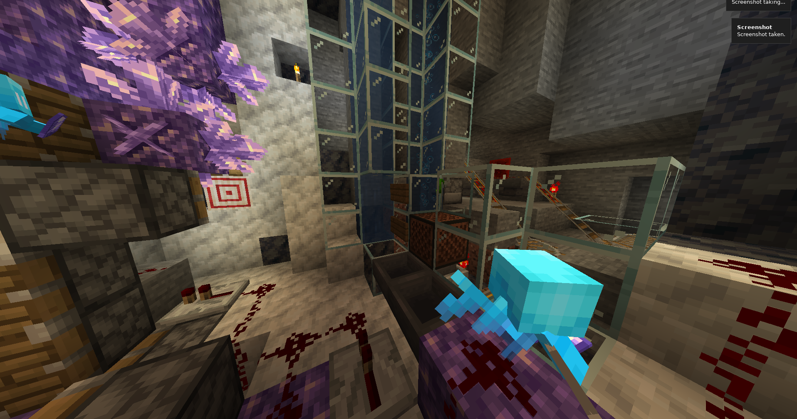
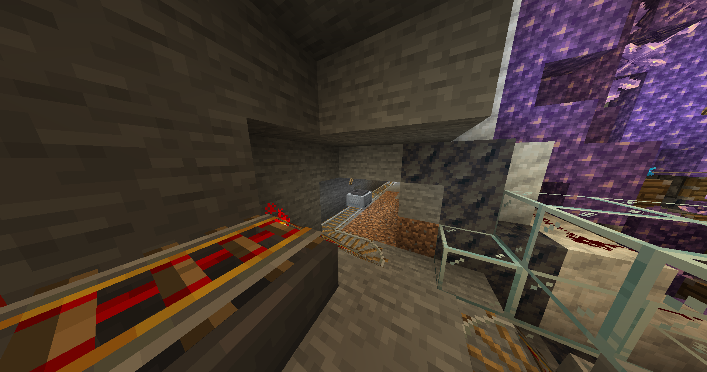

Through trial and error I have developed a kind of amethyst farm in Minecraft. It is neither pretty nor efficient, but it can be improved and it is easy to build. There are four parts to the system: the collection timer system, the piston matrix system, the allay collection system, and the transfer system. Each geode recieves its own copy of these systems, and the amethyst shards are transported to a central location.
The Timer

The timer system is a etho hopper clock with five items that is turned into a counter by locking one of the hoppers. Every time a random tick is observed from the sapling, one item is released from the locked hopper. When all five items have been released, the piston matrix fires and the hopper clock resets.
This random tick counter is not the most efficient way to mine the amethyst, but it can be tuned and is better than losing valuable piston room to actually measure when the crystals grow.
The Piston Matrix

The piston matrix itself is tied to the timer. When the timer activates, all the pistons activate too, breaking the crystals. Some of the crystals will be fully grown, and these will drop two amethyst shards for collection. The pistons will then deactivate, waiting for the next cycle and letting the allays access the dropped items.
The Allay Collection
Two allays are positioned to cover the entire geode. When the amethyst shards are dropped by the piston matrix, the allays grab up the shards and carry them to a noteblock that fires every couple seconds. They throw the items, which are then collected by hopper and hopper minecart to be sent upstairs. Care must be taken that the allays cannot get stuck inside crevices of the geode.
The Transfer
The transfer system itself is simple: hopper minecarts collect the shards from the allay system and then put them into a dropped system powered by a clock, which shoots the items up into a water stream where they are collected in my base.

Expansion
This system can be connected by rail to any other geodes in the area, currently I am connected to one other geode but there is another geode ready have its own piston matrix installed.